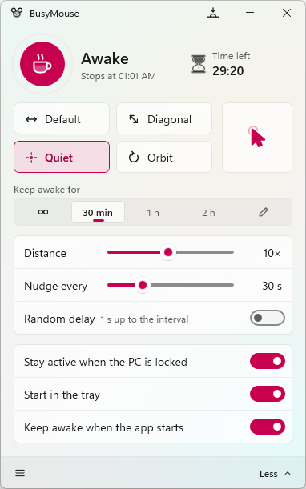
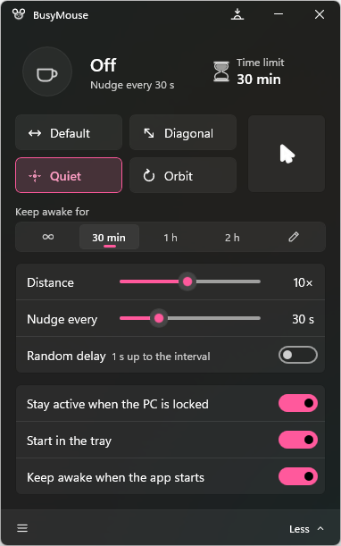
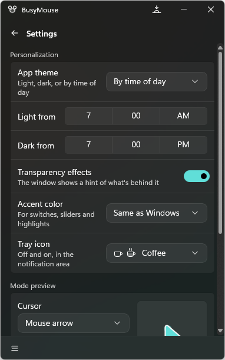
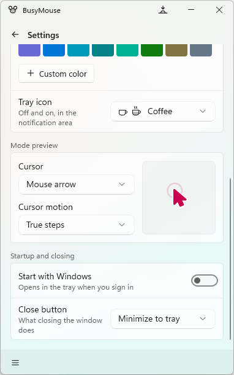

Four nudge styles
Default slides sideways and back. Diagonal goes down-right. Orbit traces a small circle. Quiet moves the pointer by zero pixels: Windows still counts it as input, and you never see a thing.
Free & open source for Windows 10 and 11
BusyMouse keeps your PC awake by gently nudging the pointer, so the screen doesn't lock and chat apps keep showing you as available. It lives in the tray and steps aside the moment you touch the mouse.
winget install azh.busymouse
Live prototype
This is a working copy of the BusyMouse window. Leave it off and the pretend PC below locks after a few idle seconds. Turn it on and watch the pointer get nudged to keep it awake. While it's on, this tab really keeps your screen awake too.
The prototype runs in your browser only. Distances and times are real, but the pretend PC locks after 15 idle seconds so you don't have to wait. Move your mouse over it and BusyMouse skips the next nudge, just like the app.
Features
Everything you'd expect from a keep-awake tool, and a few things you wouldn't.
Default slides sideways and back. Diagonal goes down-right. Orbit traces a small circle. Quiet moves the pointer by zero pixels: Windows still counts it as input, and you never see a thing.
Using the mouse yourself? BusyMouse notices and skips the nudge. It never fights you for the pointer.
Stay awake for 30 minutes, 2 hours, or until a set time, then it stops on its own.
Nudge every 1 second to 3 hours, by 1 to 120 pixels, optionally at random intervals.
Optionally stop nudging when you lock the PC, and pick up again when you're back.
Click the tray icon for a quick flyout, right-click for the menu, or press Ctrl+Shift+J anywhere. Choose a coffee cup or a mouse for the icon, and start with Windows straight into the tray.
Mica window, acrylic menu, light and dark themes on a schedule, and your accent color.
No telemetry, no accounts, no network connections. Your settings stay on your PC.
Start awake, minimized, in any mode, or stop the running copy, all from the command line.
The real thing




Command line
Every option in the window has a switch. Mode, seconds, distance, random and locked-state are remembered for next time.
BusyMouse -n -m -o Orbit -s 60
PS> BusyMouse --help BusyMouse [options] -n, --nudge Keep awake as soon as the app starts -m, --minimized Start in the tray, without the window -g, --settings Open the window on start -o, --mode MODE Default, Diagonal, Quiet or Orbit -s, --seconds N Seconds between nudges, 1 to 10800 -d, --distance N How far each nudge moves, 1 to 120 -r, --random Wait a random time between nudges -l, --respect-locked-state Pause while the PC is locked --stop-nudging Stop the running copy, then exit -h, --help Show this help
Download
Windows 10 version 1809 or later, or Windows 11. x64 and ARM64.
One line in Terminal. Updates with winget upgrade.
winget install azh.busymouse
Everything included. The usual choice.
Automatic updates, installed in a click.
Get it from Microsoft StoreFAQ
Every so often BusyMouse sends Windows a tiny mouse movement, exactly as if you'd nudged the mouse. That resets the idle timer that dims and locks the screen, and that chat apps use to mark you as away. Each nudge is undone by the next, so the pointer stays where it was.
No. If you've used the mouse recently, BusyMouse skips the nudge. Quiet mode moves the pointer by zero pixels, so even when it does nudge, nothing visibly moves.
None. It makes no network connections at all: no telemetry, analytics, ads, accounts or update checks. Read the privacy policy.
No. The installer, the portable zip and the Store version include everything. The smaller "no runtime" downloads offer to fetch the .NET Runtime from Microsoft if your PC doesn't have it.
Yes. Turn on Start with Windows in Settings and it opens in the tray when you sign in. Add Keep awake when the app starts to have it on from the first second.
Yes, and open source under the MIT license. The code is on GitHub.